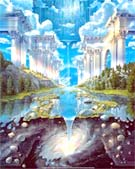
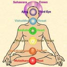

Este tiempo de tanta transformación hace que los seres humanos prestemos
nuevamente atención al alma y al espíritu. Porque estamos llegando a un
entendimiento más amplio de quienes somos, para qué vivimos en la Tierra y
estamos tratando de clarificar ahora hacia dónde vamos. Todo ser viviente
en la tierra tiene un alma ya sea individual o grupal como sucede en el
caso de minerales, vegetales y algunos animales.
Espíritu no es lo mismo que alma, al espíritu se lo representa generalmente
como una paloma que desciende de Dios hacia el alma humana. El alma es una
partecita de Dios que está experimentando la vida y buscando la fuerza
espiritual para retornar a la casa o morada del Creador. Hay seres humanos
que tienen solo alma y quienes tienen alma y espíritu.
Aquel que porta el espíritu es generalmente un ser que llega a otros a
encender con su chispa el movimiento del alma.
Las almas se encuentran a lo largo del tiempo en varias vidas si es que es
necesario aprender algo en ... conjunto. Existen almas afines, almas
familiares, almas compañeras y almas gemelas.
El alma gemela es parte de la misma alma que decide encarnar en dos o más
cuerpos, el reencuentro con otra parte de la propia alma es muy fuerte y
generalmente se da para que se recuerde el sendero de evolución. El alma
gemela no es la pareja perfecta, una pareja puede darse entre almas
compañeras o almas afines, y cuando se da entre almas familiares por
ejemplo entre almas hermanas, lo que generalmente sucede es que no estén
por mucho tiempo juntas.
Gracias a conocimientos como los Registros Akáshicos podemos acceder a la
sanación de todo lo vivenciado por un alma.

Los humanos somos seres multidimensionales, nos movemos en trece
dimensiones: la primera dimensión es la de la vida, en ella se dan todos
los procesos celulares, orgánicos. La segunda dimensión, relacionada con
los sentidos: vista, olfato, tacto, gusto, oído; y con todas las
percepciones que tenemos a través de ellos. La tercera dimensión es la del
espacio-mente, esta es la considerada como más conocida a nivel del espacio
ya que los cuerpos que observamos están en esta dimensión. La cuarta
dimensión es la del tiempo, es aquella a la que tenemos acceso cuando
vibramos en el tiempo NO MEDIDO, en el tiempo del no tiempo, por ejemplo
cuando estamos haciendo alguna actividad artística o meditativa y no
tenemos noción del tiempo medido. Desde la quinta dimensión hasta la décimo
tercera dimensión se considera morada de seres de luz, maestros y guías
espirituales, se tiene acceso en estados de conciencia crística, continua.

Para transitar por todas estas dimensiones el ser humano está dotado de
varios cuerpos que conforman su totalidad: cuerpo físico es el más denso
formado por huesos, músculos, órganos. El cuerpo emocional o astral, es más
sutil y sale del cuerpo físico durante la meditación consciente y los
sueños. El Cuerpo mental, es más sutil que el emocional y en este cuerpo se
mueve la inteligencia, la telepatía, y todos los procesos extrasensoriales.
El cuerpo causal o crístico es el más sutil de todos y es morada de nuestra
magna presencia Yo Soy, nuestro Ser Superior, nuestro Cristo.